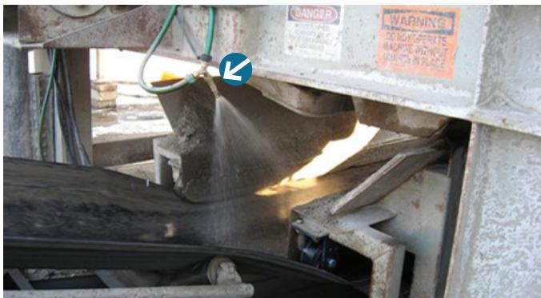
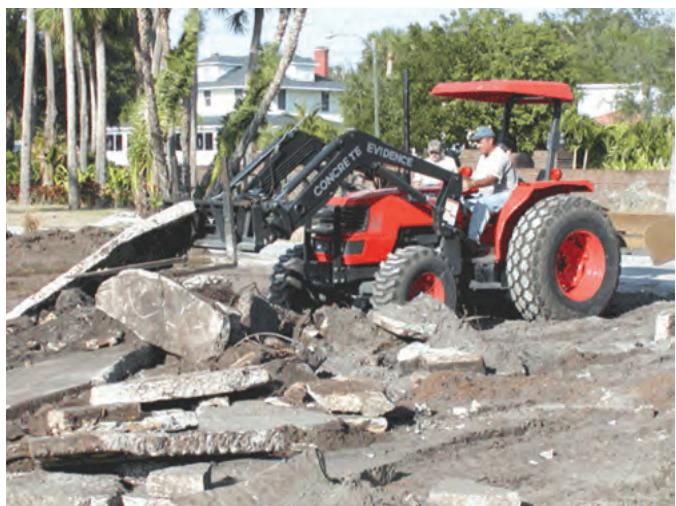
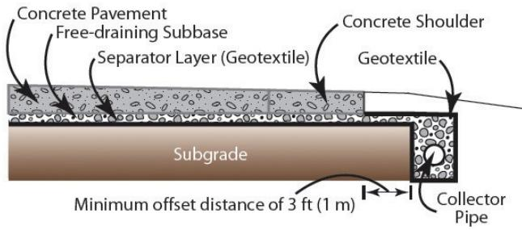
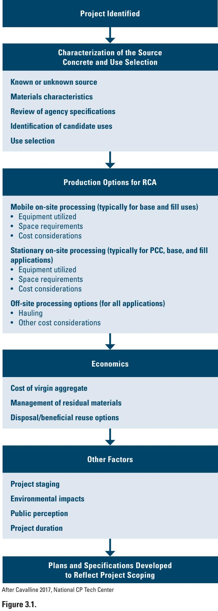

Reclaimed Material (RCA) Recycling Process
The RCA recycling process converts demolished concrete that would otherwise become waste into a reusable aggregate by crushing, removing reinforcement and contaminants, and sizing the material to meet specified gradations for targeted end‑uses such as new concrete mixes, bound pavement, or unbound base layers【1†ref-1】【2†ref-2】. Its purpose is to satisfy structural and drainage performance while minimizing cost and environmental impact, which requires controlling moisture (pre‑wetting to a saturated surface dry condition) and limiting fine generation that could impair drainage【1†ref-1】【2†ref-2】. Selection of the appropriate processing pathway hinges on confirming that the reclaimed material meets project specifications, then matching it to the most sustainable feasible grade given site conditions, contractor experience, economic factors, and agency preferences【1†ref-1】【2†ref-2】.
Sources (2)
Purpose and decision context
The RCA recycling process is intended to support the project‑level decision of which specific end‑use reclaimed concrete aggregate should be assigned to—such as new concrete mixes, bound pavement, unbound base or sub‑base layers, fill, or subgrade stabilization—and what processing steps are required to meet that use’s performance criteria. The guides note that “When used in new concrete, it is recommended that RCA be prewetted and close to a saturated surface dry condition before batching.” They also state that “Once source material characteristics are known, one or more uses for RCA can be targeted by an agency or other stakeholders,” and that “site conditions, contractor experience, economic considerations, and agency preferences each play a role in use selection.” [1][2]
[1] — Construction (pp. 72–73); [2] — Ch. 3 (pp. 33–37), Ch. 4 (pp. 41–42), Ch. 7 (p. 69)
The reclaimed‑material recycling process addresses the need to transform demolition concrete that would otherwise become waste into a high‑grade aggregate capable of meeting the structural and drainage requirements of new construction while keeping project costs and environmental impacts low. To satisfy these performance goals the process must control moisture so that “When used in new concrete, it is recommended that RCA be prewetted and close to a saturated surface dry condition before batching,” and limit fine generation because “In a drainable layer, increased fines decrease the ability for water to escape out of the layer.” At the same time, the approach aligns with broader sustainability objectives—“sustainability principles encourage material reuse at the highest grade possible”—and seeks operational efficiency, as demonstrated by the aim that “Very few hauling trucks are required.” [1][2]
The figure below illustrates the initial stage of this process, showing demolished material stockpiled beneath a bridge prior to crushing.

Crushing of demolished concrete material with water spray application. [2]The image displays a heavy-duty industrial crusher actively processing large chunks of gray, fractured concrete debris into smaller aggregate on a conveyor belt system. A nozzle mounted above the crushing chamber sprays water onto the material to control dust during the operation.
[1] — Construction (pp. 72–73); [2] — Ch. 3 (pp. 33–37), Ch. 4 (pp. 41–42), Ch. 7 (pp. 69–72)
Scope and applicability
The guides agree that reclaimed‑material recycling is appropriate for projects whose scope includes bound or pavement work—such as roadways, parking structures, and other concrete pavements—and also for lower‑grade applications like fill and unbound base layers when the source material meets required gradations. It works best when existing pavement can be crushed, cleared of reinforcement and contaminants, and sized to meet aggregate specifications; “The steps required for the RCA production process are crushing and removing existing pavement material, removing any reinforcement and/or other contaminants, and processing the reclaimed material down to appropriate aggregate sizes.” The process fits naturally into the construction phase during base/subbase placement, including drainable layers where minimal handling is advised. Projects that can break concrete early in construction allow “Mobile On‑Site Processing for Base and Fill Uses” but require “This method does, however, require space on one side of the roadway for the windrows of RCA.” Early demolition must generate sufficient material, and a clear staging plan is essential: “Project staging plays a key role in the availability of source concrete material for RCA, timing of its availability, stockpile and storage needs.” When RCA is intended for new concrete or PCC mixes, higher QA/QC controls are needed: “RCA for new PCC mixtures will likely need to be held to higher QA/QC standards than RCA for base or fill applications,” and the material should be pre‑wetted: “When used in new concrete, it is recommended that RCA be prewetted and close to a saturated surface dry condition before batching.” The guides also note that unbound RCA can serve as free‑draining, dense‑graded base material, providing stability: “RCA can be produced to provide excellent free-draining base material that is both permeable and highly stable when crushing and screening processes yield relatively angular, rough-textured particles” and that “Unstabilized (granular) base applications are the most common use of RCA produced from concrete pavements.” Additionally, the guides cite “use of RCA in bound and pavement applications” and “lower‑grade uses such as fill material” as viable options. [1][2]
The following figure illustrates the initial step of this process, where broken concrete pavement is removed for recycling.

Red tractor with front-end loader removing broken concrete pavement for recycling. [1]A red tractor equipped with a black front-end loader is shown lifting large slabs of broken concrete from the ground.
[1] — Construction (pp. 72–73); [2] — Ch. 3 (pp. 33–37), Ch. 4 (pp. 41–42)
The review identifies several conditions under which reclaimed‑material recycling is not appropriate and a conventional or alternative material strategy should be adopted. First, if the recycled aggregate cannot satisfy the project’s required specifications—or if site‑specific constraints such as unsuitable ground conditions, limited contractor experience, unfavorable economics, or agency preferences make its use impractical—recycling should be set aside in favor of new material or other disposal options. Second, mobile on‑site processing for unbound RCA base is infeasible when the work area lacks sufficient lateral space beside the roadway to accommodate windrowed material; without that clearance the crushing, screening and grading sequence cannot be performed efficiently, prompting a shift to off‑site or alternative recycling methods. Third, projects that demand very fine RCA (e.g., passing sieves smaller than No. 4) often find the recycling process unable to meet those size thresholds, resulting in excess material becoming waste; under such circumstances a different approach—such as using virgin aggregate or sourcing alternative fill—is preferable. Finally, during early project phases where on‑site concrete debris has not yet been generated (e.g., initial roadway‑shoulder widening), reclaimed material is unavailable and the design must rely on virgin aggregate or off‑site RCA until demolition supplies become available. [2]
The following figure illustrates a typical off-site concrete pavement recycling operation as an alternative when on-site processing is not feasible.
 Mobile concrete pavement recycling equipment in operation. [2]
Mobile concrete pavement recycling equipment in operation. [2]
The image displays a line of heavy machinery, including an excavator and a large mobile crushing plant, processing material on a dirt surface adjacent to a commercial parking lot. This equipment represents the physical apparatus used in the RCA recycling process to convert demolished concrete into reusable aggregate by crushing and sizing the material.
[2] — Ch. 3 (pp. 33–37), Ch. 4 (pp. 41–42)
Information needs
The RCA recycling workflow starts by documenting the physical and chemical properties of the incoming concrete—size distribution, presence of sealants, reinforcing steel, and contaminant levels such as asphalt cement. Planners must then map site‑specific conditions: available lateral space for windrows beside roadways, stockpile locations, crushing and screening equipment footprints, and expected production rates and material availability throughout project stages. Economic data—including potential cost savings from reusing RCA in fill, bases, or new pavement—are weighed alongside stakeholder input (contractor experience, agency preferences, and design flexibility) to select feasible end‑uses. Finally, environmental information such as permissible asphalt‑cement content and pH/runoff limits guides compliance with state regulations and protects sensitive locations. [2]
The following figure illustrates a well-implemented on-site material crushing program in an urban area.
 On-site material crushing program in an urban area [2]
On-site material crushing program in an urban area [2]
The image displays a large pile of demolished concrete rubble situated beneath a highway overpass, adjacent to a black silt fence and grassy verge.
[2] — Ch. 3 (pp. 33–37), Ch. 4 (pp. 41–42), Ch. 7 (p. 72)
Alternatives
Feasible options that should be compared in an RCA recycling process span equipment selection, plant configuration, transport logistics, material‑handling intensity, target end‑uses, crushing and screening strategy, disposition and supplemental sourcing, and base‑design alternatives. Equipment choices range from “Hand‑operated or vehicle‑mounted crushing devices (e.g., hand‑held tools, drop hammers/blades, impact breakers/hammers, etc.)” to different crusher types such as “jaw, cone, or impact” which “the crushing mechanism (e.g., jaw, cone, or impact) will affect the gradation of RCA produced and the quantity of fines generated”. Plant layout can be “stationary, portable, or mobile”. Transport methods may involve “Front‑end loaders or dump trucks for transporting”. For drainable base or subbase layers the guidance advises that shaping be kept minimal: “If RCA is used in what is intended to be a drainable base or subbase layer, it is advised that handling (i.e., shaping) the material is kept to a minimum”. End‑use selection includes “one or more uses for RCA can be targeted”, ranging from high‑grade bound concrete and pavement mixes to lower‑grade fill or unbound granular bases. Disposal versus reuse decisions are framed by “Residual material … can be either disposed of or reused in various applications at the project site”, with the possibility that “contractors may need to supplement RCA with virgin material” when supply is insufficient. For unbound base applications the options include “Unstabilized (granular) base applications are the most common use of RCA produced from concrete pavements.” versus engineered free‑draining or dense‑graded designs, and the fine fraction can be used as a separate stabilizing layer. [1][2]
The following figure illustrates a typical drainage system designed for the application of free-draining recycled concrete aggregate base.

Typical drainage system for use of free-draining RCA base [2]The figure illustrates a cross-section of a pavement structure incorporating a concrete shoulder and collector pipe to manage water within the subgrade. It depicts specific design features such as a free-draining subbase, separator layer (geotextile), and an offset distance for the collector pipe. This figure illustrates the application of reclaimed material in a base layer by showing how to design effective drainage features that allow residual crusher dust to settle in a granular filter layer rather than entering the pipe.
[1] — Construction (pp. 72–73); [2] — Ch. 3 (pp. 33–37), Ch. 4 (pp. 41–42)
Decision criteria
The guides concur that the foremost gatekeeper for selecting an RCA recycling process is whether the reclaimed material can meet the project’s performance specifications. This includes meeting required size‑gradation limits, maintaining adequate moisture conditions, and limiting fine particles so that drainage capacity is not compromised. Cost efficiency is the next decisive factor; any savings realized through beneficial reuse are expected to influence the choice. Sustainability objectives also rank high, with principles urging the use of the highest possible grade of reclaimed material. Project timing must align with construction sequencing, making the availability of RCA at the required stage a critical consideration. Durability, environmental impact, and public perception are acknowledged as supportive factors but do not alone drive the decision. [1][2]
[1] — Construction (pp. 72–73); [2] — Ch. 3 (pp. 33–37), Ch. 4 (pp. 41–42)
In selecting a recycling pathway for reclaimed material, the foremost priority is to follow sustainability principles by targeting the highest reuse grade that still satisfies project specifications. Once the material’s characteristics are confirmed, the decision should then be adjusted based on site conditions, the experience of the contractor, economic considerations, and the preferences of the overseeing agency, each factor influencing the final use choice in turn. [2]
The following figure illustrates the decision-making framework for project selection and scoping within this process.

Flowchart of project selection and scoping considerations for concrete recycling. [2]The figure presents a vertical flowchart outlining the decision-making process for recycled concrete aggregate (RCA) projects, beginning with ‘Project Identified’ and concluding with ‘Plans and Specifications Developed’. It details specific stages including source characterization, production options such as mobile or stationary processing, economics, and other factors like environmental impacts. This diagram illustrates the generalized approach to project selection and scoping for concrete recycling by mapping out how material characteristics and site conditions guide the choice of a sustainable reuse grade.
[2] — Ch. 3 (p. 33)
Analysis methods and tools
The results of an RCA recycling process are driven by a set of core assumptions that, if unmet, introduce considerable uncertainty. First, it is assumed that the characteristics of the source concrete are known and will satisfy project specifications; this underpins the targeting of specific uses for reclaimed aggregate. Sustainability goals further assume that “sustainability principles encourage material reuse at the highest grade possible,” which biases selection toward high‑grade applications. Production‑related assumptions include expected production rates, steady availability of demolition material, haul distances, and equipment choice; in particular, the analysis assumes that “the crushing mechanism (e.g., jaw, cone, or impact) will affect the gradation of RCA produced and the quantity of fines generated.” Project specifications are taken as reliable guides for acceptable size fractions, reflected in the premise that “Specifications typically dictate the size fractions of RCA that can be used and, conversely, the fractions that may be unusable for any given application.” Finally, regulatory assumptions treat reclaimed concrete aggregate as non‑hazardous: “RCA is typically defined as an inert material and, therefore, is not subject to hazardous waste regulations.”
Uncertainties arise from site conditions, contractor experience, fluctuating economic factors, and agency preferences that can shift the ultimate use of RCA. Variability in fines production, material availability, and haul logistics creates uncertainty in both cost and environmental outcomes. The amount of fine material generated may exceed the limits set by specifications, leading to residual waste whose disposal or beneficial reuse is uncertain and depends on stakeholder design flexibility and handling practices. Early‑stage shortages of demolition material can force supplementation with virgin aggregate, while project staging can produce surplus RCA that must be accommodated. Environmental constraints—such as pH, runoff, durability concerns, and drainage issues—can undermine performance assumptions, especially where state limits on contaminants differ. Regulatory ambiguity across states regarding the classification of recycled concrete under RCRA adds further uncertainty to cost‑benefit estimates. [2]
[2] — Ch. 3 (pp. 33–37), Ch. 4 (pp. 41–42), Ch. 7 (pp. 69–72)
Stakeholders and constraints
The project‑lead agency, together with other stakeholders such as contractors, first assesses the characteristics of the reclaimed material and gathers input on site conditions, contractor experience, economic factors, and agency preferences. Contractors and other interested parties provide technical and practical feedback, but “the final approval rests with the governing agency.” At the regulatory level, “The EPA establishes the RCRA framework that governs classification of construction waste,” and individual state environmental agencies develop and enforce solid‑waste management plans that adopt or supplement those federal rules. Approval to use RCA in new infrastructure therefore requires both the project agency’s decision on suitable uses and the combined approvals of the EPA and the relevant state agency. [2]
[2] — Ch. 3 (p. 33), Ch. 7 (p. 69)
The choice of a reclaimed‑material recycling process is bounded by a hierarchy of design specifications, state statutes, and federal waste‑management regulations. Design requirements first set the “allowable particle‑size fractions and fine‑content limits for each end use—drainable base, dense‑graded granular base, or concrete,” which in turn dictate equipment; for example, “limiting fines may require a jaw crusher rather than an impact crusher.” When RCA is destined for new concrete, it must be “prewetted and close to a saturated surface dry condition before batching,” and “Additional quality control measures may be necessary to ensure good moisture control.” For drainable base or sub‑base applications the guides advise that “handling (i.e., shaping) the material is kept to a minimum” because “the tendency for fine particulates to break off from the surface of the RCA is increased, otherwise,” and such layers must be “daylighted.” Material‑quality thresholds are imposed by state statutes—e.g., “Minnesota’s cap of three percent asphalt cement by weight”—while other jurisdictions may impose “outright bans or conditional allowances based on pH, durability, or drainage concerns.” At the regulatory tier, the “Resource Conservation and Recovery Act (RCRA)” determines whether reclaimed concrete is classified as inert or hazardous, thereby shaping permitting requirements, solid‑waste management plans, and overall feasibility. Although RCA is typically defined as an inert material and therefore not subject to hazardous waste regulations, “environmental requirements in sensitive areas may restrict recycling operations.” [1][2]
[1] — Construction (pp. 72–73); [2] — Ch. 3 (pp. 35–37), Ch. 4 (pp. 41–42), Ch. 7 (p. 69)
Timing and implementation
The decision to recycle and reuse reclaimed construction material should be made as soon as the source‑material characteristics are identified and, simultaneously, during the project‑staging phase when planners can evaluate demolition timing, RCA availability, stockpile and storage requirements. At that point agencies or stakeholders can match the known properties to one or more viable uses, weigh sustainability goals against site conditions, contractor expertise, economic factors and agency preferences, and decide whether on‑site RCA will be ready for the intended applications or if temporary virgin aggregate is required. [2]
[2] — Ch. 3 (pp. 33–37)
The guides define several material‑condition thresholds that automatically trigger operational responses. When reclaimed concrete aggregate “RCA be prewetted and close to a saturated surface dry condition before batching,” it must be wetted prior to inclusion in new mixes. If RCA is slated for a drainable base or subbase, the guidance states that handling should be minimized: “If RCA is used in what is intended to be a drainable base or subbase layer, it is advised that handling (i.e., shaping) the material is kept to a minimum.” Oversized rubble after pavement breaking activates equipment: “After pavement breaking, a hydraulic hammer may be used to break oversized rubble pieces.” Likewise, when “the feed entering an impact crusher grows larger than the 12‑inch threshold,” the crusher must be swapped for a jaw or other suitable mechanism. Failure to meet specification limits prompts diversion: “When the produced RCA fails to meet the size‑fraction limits … fines passing a No. 4 sieve exceed allowable amounts, the batch is diverted for disposal, alternative reuse (fill, base, subgrade stabilization) or further processing, and a cost‑saving analysis is required.” Exceeding regulatory caps also forces action: “Exceeding regulatory thresholds such as an asphalt cement content greater than three percent by weight … forces re‑blending or rejection of the material.” Accumulation of fines triggers separate handling: “Accumulation of crusher fines that must be windrowed for later removal.” If on‑site supply is insufficient, “lack of on‑site RCA during a staging phase that necessitates supplementing with virgin aggregate or off‑site RCA” requires supplemental sourcing. When primary uses are fulfilled, “surplus RCA after primary uses are satisfied, which prompts identification of secondary applications (e.g., new PCC mixes).” Finally, any shift in environmental or regulatory conditions “requires immediate reassessment of the recycling plan.” [1][2]
[1] — Construction (pp. 72–73); [2] — Ch. 3 (pp. 34–37), Ch. 4 (pp. 41–42)
The selected on‑site RCA recycling option relies on a mobile crushing train that is fed by an excavator. As the report states, “An excavator feeds the mobile crushing equipment … which includes crusher(s), magnet belts to remove metals from crushed pieces, and sizing screens.” The unit must be equipped with conveyors that recycle oversize material back to the crusher and with appropriately sized screening decks; “Conveyers and screens need to be sized for the appropriate production rates and material to be produced to meet specifications.” Sufficient lay‑down area beside the roadway is required for windrowed RCA and fines, as well as dedicated stockpile zones that can be relocated as work progresses. The overall schedule follows a rolling, continuous operation: demolition generates feedstock, which is processed in real time while the pavement remains open, and production is synchronized with construction phases through careful staging. Accordingly, “Project staging plays a key role in the availability of source concrete material for RCA, timing of its availability, stockpile and storage needs.” This staged approach ensures that early activities (e.g., shoulder widening) can proceed before reclaimed material is available, after which the processed RCA is used for base or pavement layers. [2]
The following figure illustrates the mobile on-site crushing equipment that serves as the core of this recycling operation.
 Mobile on-site crushing equipment [2]
Mobile on-site crushing equipment [2]
The image displays a large, multi-component mobile processing train situated on unpaved ground. Such mobile on-site processing is a primary method for converting demolished concrete into reusable aggregate by breaking it down and removing contaminants.
[2] — Ch. 3 (pp. 34–37)
Outcomes and follow-up
Success is achieved when reclaimed material is matched to an application for which it satisfies all project specifications while being reused at the highest grade permissible under sustainability principles. Success for the RCA recycling process is realized when project staging delivers on‑site reclaimed concrete at the right time and in sufficient quantity to meet base or pavement requirements, thereby limiting the need for supplemental virgin aggregate and leaving little or no surplus material after construction. Success for the RCA recycling process is achieved when reclaimed concrete is processed and blended into an unbound aggregate base that meets all applicable specification requirements for its intended function—whether as a free‑draining, permeable layer or a dense‑graded, stable foundation. These outcomes are measured by confirming that the material characteristics meet required specifications through laboratory and field testing, tracking utilization rates (the proportion of required fill satisfied with on‑site RCA versus imported material), and quantifying any leftover RCA. Routine process‑control checks—crushing, screening, gradation, contaminant limits—and performance tests such as permeability, primary stability, and strength gains from fine‑particle hydration provide the quantitative evidence needed to verify that the objectives have been met. [2]
[2] — Ch. 3 (pp. 33–37), Ch. 4 (pp. 41–42)